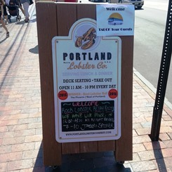
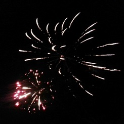
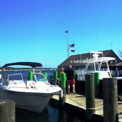
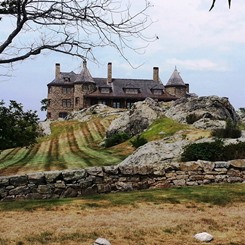
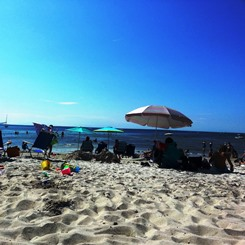

Old Orchard Beach, ME
June 24-26, 2016

Keeley and Kevin's first trip of the summer was to Old Orchard Beach, ME. They spent Friday night setting up camp, Saturday biking to Portland and back, and Sunday being lazy on the beach. While it may have been the first of many trips that summer, both Keeley and Kevin agree that it was their favorite.
Read more...
Canandaigua, NY
July 2-9, 2016

Keeley and Kevin's second trip of the summer was to Canandaigua, NY where they both grew up. They spent the entire week with both of their families partying and relaxing. Highlights of the trip include 4th of July fireworks in the town where Keeley's father grew up, and the beautiful lakeside Engagement Party hosted by Keeley's aunt (yes, they are engaged!).
Read more...
Martha's Vineyard, Cape Cod, MA
July 22-24, 2016

Keeley and Kevin's third trip of the summer was to Martha's Vineyard. They spent Friday night setting up camp in Falmouth. On Saturday. they biked to Woods Hole, rode the ferry to Martha's Vineyard, and then biked all over the Vineyard. They had plans to go to the beach on Sunday, but luck was not on their side and car troubles got in the way.
Read more...
Newport, RI
August 5-7, 2016

Keeley and Kevin's fourth trip of the summer was to Newport, RI. They spent Friday night setting up camp, Saturday setting up camp again and then biking along beautiful Ocean Avenue, and Sunday learning how to surf at First Beach. This trip was a close second to Old Orchard Beach on the favorit trip scale.
Read more...
Falmouth, MA
August 20, 2016

This was a simple trip to Old Silver Beach in Falmouth, Cape Cod to make up for the time they weren't able to go earlier in the summer due to car troubles. Keeley and Kevin like to refer to it as their last weekend of freedom before having to prepare for a new academic year.
Read more...